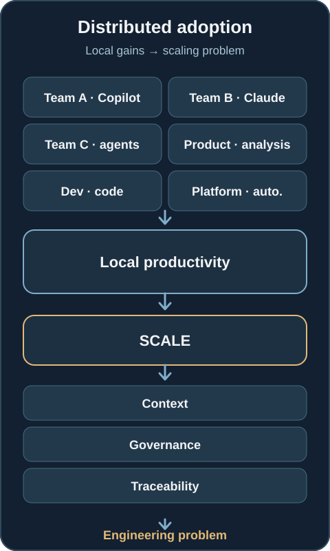
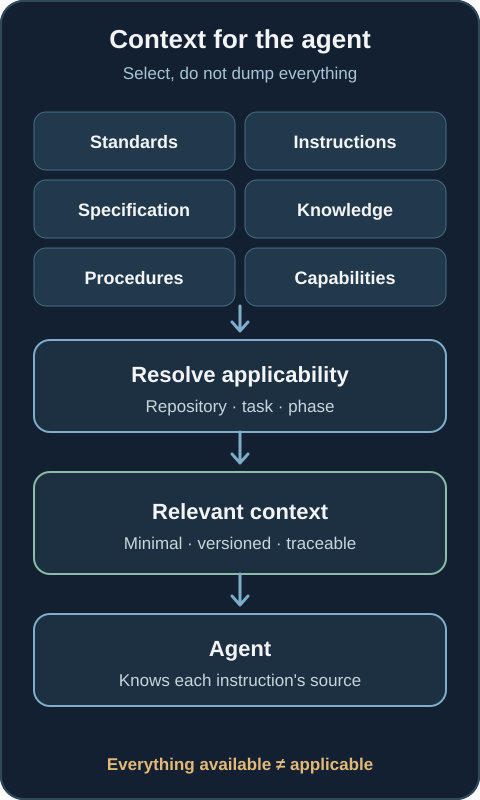
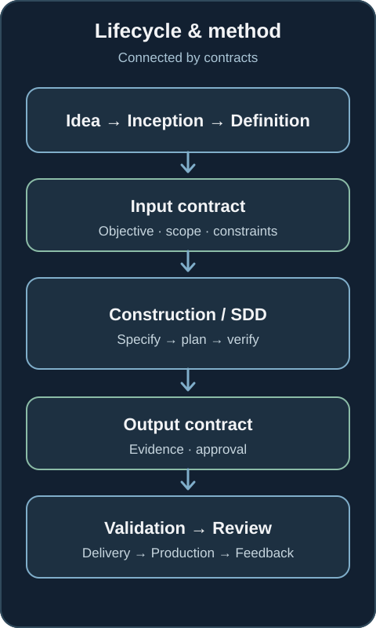
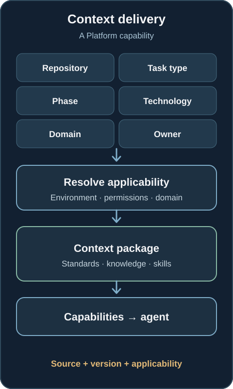
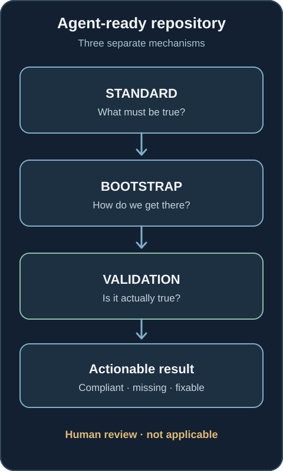
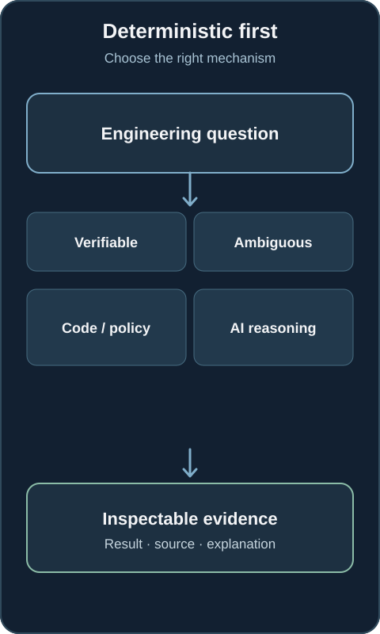
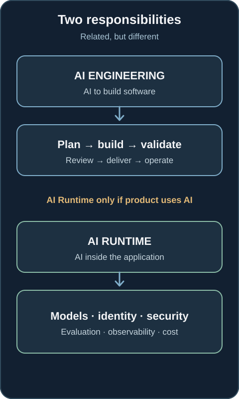
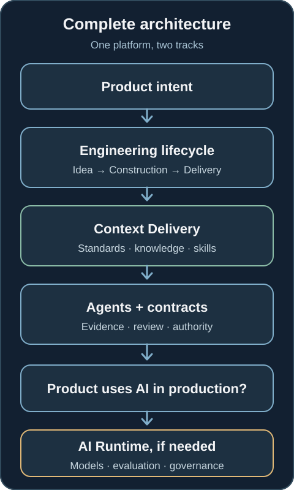

What happens when AI agent adoption grows faster than your governance?
The challenge is no longer getting AI to write more code. It is building an engineering model where humans and agents can operate at scale without losing context, standards, traceability, or accountability.
AI adoption in engineering is moving faster than the operating models required to support it. One team uses Copilot; another uses Claude; another starts building agents. Product analyses requirements with AI, Engineering generates code, and Platform automates infrastructure. For a while, each team sees local gains. Then we try to scale the practice.
The questions become harder than Which model should we use? How does an agent find architecture decisions, repository knowledge and approved Platform capabilities? How do we know it followed the right rules? Who remains accountable for the result? And how do we answer without making Platform the manual translator for every change?
The problem is no longer introducing AI into software development. The problem is building an engineering model capable of using it at scale.

The first mistake: treating AI as an isolated tool
Adding an assistant to an IDE does not create an AI-assisted engineering process. An agent may need corporate standards, repository instructions, the change specification, system knowledge, reusable procedures and approved Platform capabilities. Much of this already exists, scattered across ADRs, wikis, pipelines, runbooks, tickets, policies and people's knowledge.
Sending all of it to the model is not the answer. Too much context adds noise; too little can omit a critical constraint. Copying corporate rules into every repository creates divergence. Letting the model alone decide which policy applies turns governance into probabilistic inference.
The goal is not to maximise context. It is to deliver the minimum relevant, applicable and traceable context for the task.

An operating model for AI Engineering
I think of the response as an AI Engineering Operating System: an operating model of contracts, standards, capabilities and governance across the engineering lifecycle, not a product or a monolithic gateway for every LLM call. It connects idea, inception, definition, construction, validation, review, delivery, production and feedback. The question becomes how AI participates safely in that system, rather than which tool every developer gets.
AWS's AI-DLC is one useful example of reasoning about AI participation across a lifecycle. My proposed architecture does not depend on AWS or its particular phases. A lifecycle tells us where work is; a methodology tells us how to work within a phase.
Lifecycle and methodology need separate contracts
During Construction, a team may use Spec-Driven Development (SDD): specify, clarify, plan, break work into tasks, implement and verify. Another team may use a different method. Neither should need intimate knowledge of every phase before and after Construction.
An input contract can carry the objective, scope, constraints, requirements, expected artefacts and risks. An output contract can carry validation results, evidence and approval state into Review. This lets the method change without redesigning the lifecycle. Tools change quickly; engineering contracts should change more deliberately.

Context delivery is a Platform capability
Someone must answer: For this repository, task and lifecycle phase, what does the agent actually need? A developer should not have to locate every corporate document. An agent should not search the entire organisation indiscriminately either.
A context delivery capability can use repository, task type, phase, technology, domain, environment, applicability and ownership to select relevant standards, instructions, knowledge, skills and approved capabilities. Every item needs its source, version and applicability recorded. Then a team can reconstruct what the agent saw when it acted.
The name of this component matters less than its responsibility: turn distributed organisational knowledge into consumable, traceable context for agents.

The repository needs a contract too
Repositories were built for people who can interpret implicit knowledge. An engineer can ask a colleague, remember a conversation or recognise an obsolete README. Agents need more explicit interfaces: stable instructions, technical knowledge locations, specifications, local procedures, applicable rules, validation commands, CI integration, ownership and completion criteria.
I would separate three mechanisms:
- Standard: what must be true for this kind of repository?
- Bootstrap: how can the repository reach that state?
- Validation: what evidence shows that the state is actually true?
The result should be actionable: already compliant, missing, automatically fixable, requires human review, or not applicable with a reason. This is a familiar Platform Engineering problem: turning a desired state into a repeatable path and a verifiable contract.

Keep deterministic checks deterministic
Not everything needs an LLM.
File existence, pinned versions, passing tests, pipeline configuration and generated artefacts are usually questions for code or policy. Whether a requirement has evidence can often begin with deterministic checks, even if assessing the quality of that evidence later needs judgment.
Models are useful for interpreting, synthesising and comparing under ambiguity. Using them for every true/false check adds cost and variability while making failures harder to reproduce and audit. Both paths should produce inspectable evidence.

Separate AI Engineering from AI Runtime
So far, this is about using AI to build software. A different problem is building software that uses AI in production. A conventional backend developed with agents does not automatically need an AI Runtime Platform. A production application that calls models, runs agents, uses retrieval, classifies information, creates content or acts on probabilistic outputs does.
That runtime needs model access, workload identity, tenant and data boundaries, guardrails, evaluation, observability, cost controls, security, governance and routes for human intervention. Those responsibilities are real. They should not be added to every repository merely because its developers use AI.

When both tracks are present, the broader architecture becomes clearer: product intent moves through an engineering lifecycle; context delivery makes standards and capabilities usable by agents; evidence and human decisions control progression. AI Runtime is an additional layer only where the running product depends on AI.

Agents are becoming consumers of the platform
Platform teams have spent years reducing developers' cognitive load with CI/CD, infrastructure as code, observability, golden paths, service catalogues, self-service and policy as code. A new consumer now needs similar interfaces.
Developers are no longer the only consumers of the platform. Agents are becoming consumers too.
An agent needs to discover what is allowed, what is true, which decisions already exist, how work should be done and how to prove it is complete. In my Platform Engineering and SRE background and in personal work such as GrowthMesh, the recurring question is how to make complex capabilities reusable without surrendering authority over consequential actions.
The central challenge is not how much code a model can produce. It is how probabilistic systems can participate in engineering processes with explicit contracts, context, evidence, evaluation, traceability, ownership and human authority. The more autonomy we grant, the more carefully we need to engineer its boundaries.